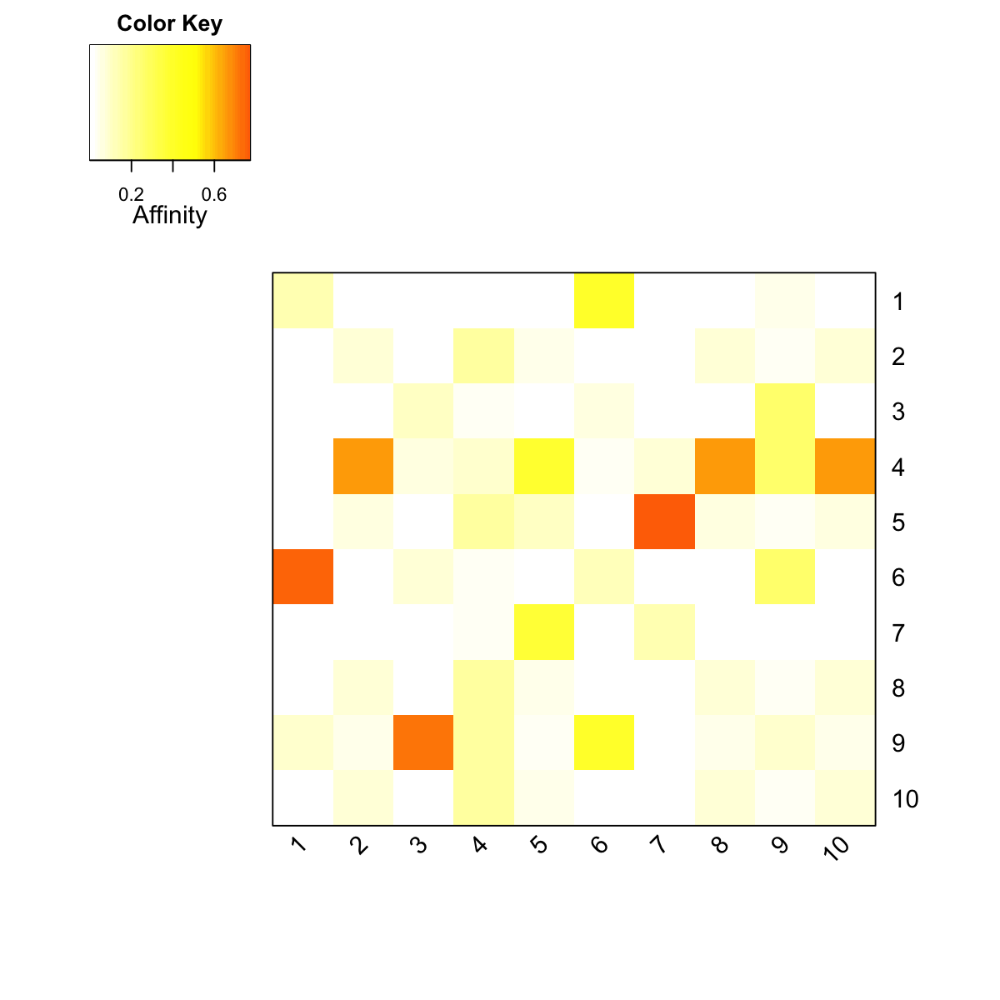

dRWR is supposed to implement Random Walk with
Restart (RWR) on the input graph. If the seeds (i.e. a set
of starting nodes) are given, it intends to calculate the
affinity score of all nodes in the graph to the seeds. If
the seeds are not give, it will pre-compute affinity matrix
for nodes in the input graph with respect to each starting
node (as a seed) by looping over every node in the graph.
dRWR(g, normalise = c("laplacian", "row", "column", "none"), setSeeds = NULL, restart = 0.75,
normalise.affinity.matrix = c("none", "quantile"), verbose = T)
When the seeds are NOT given, it returns:
PTmatrix: pre-computated affinity matrix with
the dimension of n X n, where n is the number of nodes in
the input graph. Columns stand for starting nodes walking
from, and rows for ending nodes walking to. Therefore, a
column for a starting node represents a steady-state
affinity vector that the starting node will visit all the
ending nodes in the graph PTmatrix: affinity matrix
with the dimension of n X nset, where n is the number of
nodes in the input graph, and nset for the number of the
sets of seeds (i.e. the number of columns in setSeeds).
Each column stands for the steady probability vector,
storing the affinity score of all nodes in the graph to the
starting nodes/seeds. This steady probability vector can be
viewed as the "influential impact" over the graph imposed
by the starting nodes/seeds. The input graph will treat as an unweighted graph if there is no 'weight' edge attribute associated with
# 1) generate a random graph according to the ER model g <- erdos.renyi.game(100, 1/100) # 2) produce the induced subgraph only based on the nodes in query subg <- dNetInduce(g, V(g), knn=0) V(subg)$name <- 1:vcount(subg) # 3) obtain the pre-computated affinity matrix PTmatrix <- dRWR(subg, normalise="laplacian", restart=0.75)Start at 2014-04-05 13:29:25 First, get the adjacency matrix of the input graph (2014-04-05 13:29:25) ... Then, normalise the adjacency matrix using laplacian normalisation (2014-04-05 13:29:25) ... Third, RWR of 10 sets of seeds using 7.5e-01 restart probability (2014-04-05 13:29:25) ... Using the seed set 1 (2014-04-05 13:29:26) ... Using the seed set 2 (2014-04-05 13:29:26) ... Using the seed set 3 (2014-04-05 13:29:26) ... Using the seed set 4 (2014-04-05 13:29:26) ... Using the seed set 5 (2014-04-05 13:29:26) ... Using the seed set 6 (2014-04-05 13:29:26) ... Using the seed set 7 (2014-04-05 13:29:26) ... Using the seed set 8 (2014-04-05 13:29:26) ... Using the seed set 9 (2014-04-05 13:29:26) ... Using the seed set 10 (2014-04-05 13:29:26) ... Finally, output 10 by 10 affinity matrix normalised by none (2014-04-05 13:29:26) ... Finish at 2014-04-05 13:29:26 Runtime in total is: 1 secs# visualise affinity matrix visHeatmapAdv(PTmatrix, Rowv=FALSE, Colv=FALSE, colormap="wyr", KeyValueName="Affinity")# 4) obtain affinity matrix given sets of seeds # define sets of seeds # each seed with equal weight (i.e. all non-zero entries are '1') aSeeds <- c(1,0,1,0,1) bSeeds <- c(0,0,1,0,1) setSeeds <- data.frame(aSeeds,bSeeds) rownames(setSeeds) <- 1:5 # calcualte affinity matrix PTmatrix <- dRWR(subg, normalise="laplacian", setSeeds=setSeeds, restart=0.75)Start at 2014-04-05 13:29:26 First, get the adjacency matrix of the input graph (2014-04-05 13:29:26) ... Then, normalise the adjacency matrix using laplacian normalisation (2014-04-05 13:29:26) ... Warning message: The row names of input setSeeds do not contain all those in the input graph. Third, RWR of 2 sets of seeds using 7.5e-01 restart probability (2014-04-05 13:29:26) ... Using the seed set 1 (2014-04-05 13:29:26) ... Using the seed set 2 (2014-04-05 13:29:26) ... Finally, output 10 by 2 affinity matrix normalised by none (2014-04-05 13:29:26) ... Finish at 2014-04-05 13:29:26 Runtime in total is: 0 secsPTmatrixaSeeds bSeeds 1 0.273208489 0.001135639 2 0.002865965 0.004204145 3 0.270493778 0.401098701 4 0.025633966 0.037603019 5 0.274441705 0.408020930 6 0.053002633 0.006424146 7 0.048514898 0.072128592 8 0.002865965 0.004204145 9 0.046106638 0.060976537 10 0.002865965 0.004204145
dNetInduce
Fang H, Gough J. (2014) DNET: dynamic networks via integrative analysis of network, expression, evolution and ontology data. R package version 1.0.0. http://dnet.r-forge.r-project.org
){kind=link}